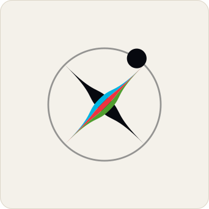

Planetary analog research
Find the Moon and Mars on Earth.
TerraX compares open data on Earth, the Moon and Mars to find places on our planet that share their terrain, geology, climate and dust. Mission teams can test rovers, suits and methods there before they fly.
- Analog sites
- –
- Mars analogs
- –
- Moon analogs
- –
- New candidates
- –
The map could not load. Check your internet connection. The site list below still works.
01
Analog sites
Every site we score, from proven training grounds to new candidates found by our analysis. The map filters apply here too.
02
How TerraX finds analogs
We describe every place on Earth, the Moon and Mars with the same set of measurable features, then score how closely they match.
-
01
Collect open data
Satellite and orbiter data from NASA, ESA and other agencies: elevation, surface temperature, minerals, dust and UV.
-
02
Build features
Turn raw layers into comparable features: aridity, temperature range, slope and roughness, geology, dust load and radiation.
-
03
Score similarity
Compare each Earth location with a target site on the Moon or Mars. The result is an analog index from 0 to 1.
-
04
Check and rank
Validate against well-known analogs like Atacama and Haughton Crater, then rank new candidates for field teams.
Earth
- MODIS land surface temperature and aerosols
- Landsat 8/9 and Sentinel-2 imagery
- SRTM and Copernicus elevation
- MERRA-2 dust reanalysis
- Google Earth Engine processing
Mars
- MGS MOLA elevation
- Mars Odyssey THEMIS thermal data
- MRO CRISM minerals
- MRO HiRISE and CTX imagery
Moon
- LRO LOLA elevation
- LRO Diviner surface temperature
- LRO LROC imagery
- Moon Mineralogy Mapper (M3)
03
Made in Azerbaijan
TerraX is built by a team from Azerbaijan, a country with hundreds of mud volcanoes and some of the most Mars-like landscapes in the Caucasus.
